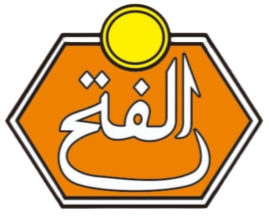
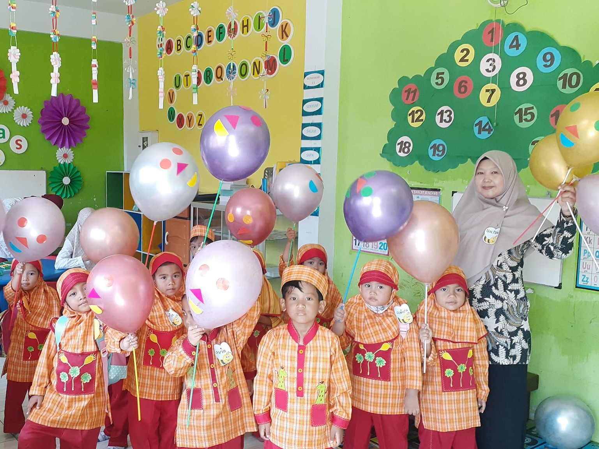
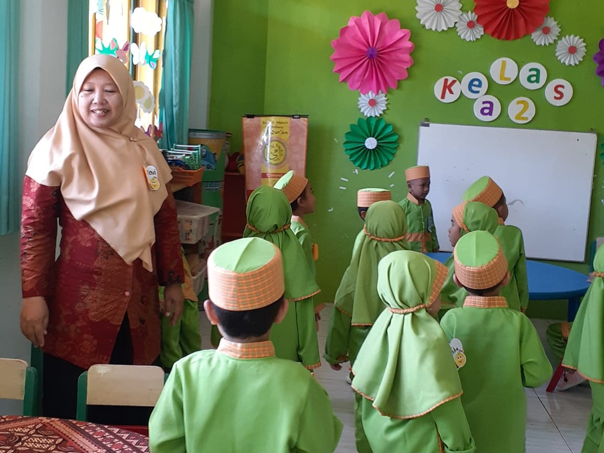
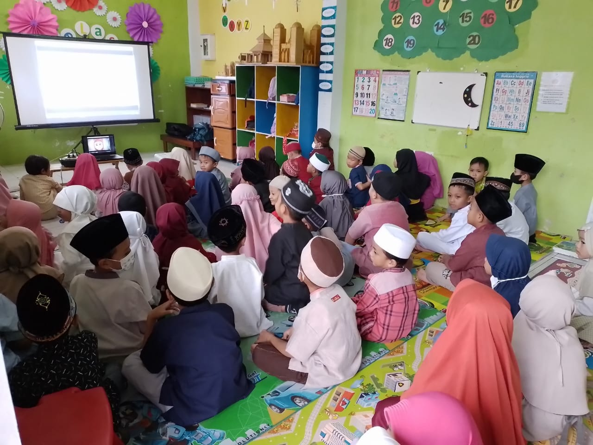
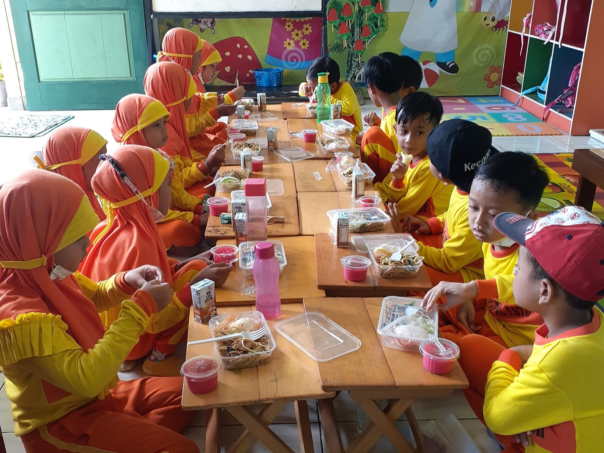
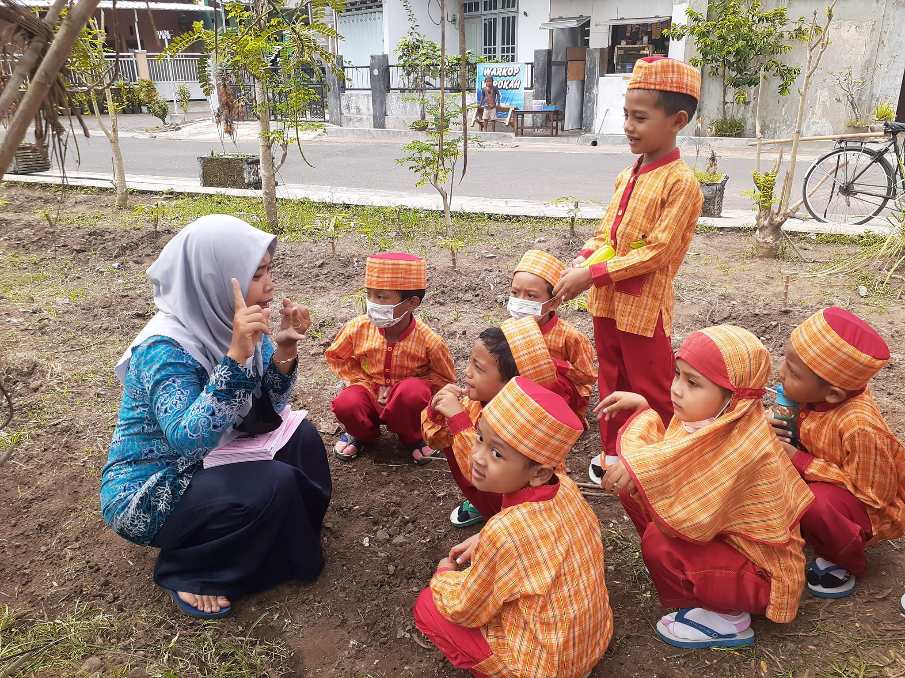
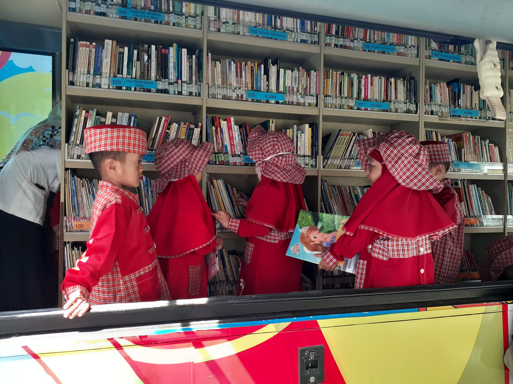

Beranda
Tentang Kami
Kegiatan Pembelajaran
Kontak
Kegiatan Belajar Mengajar






Libur Hari Raya Idul Fitri 29 Maret-17 April 2024 - 18 April Jam Pembelajaran Kembali Normal - Segala pembayaran SPP/Tabungan bisa dilakukan sejak hari pertama masuk sekolah.
Ikuti Media Sosial Kami
Copyright © 2024 KBIT TKIT AL-FATH. Made by Hilyah Anugerah Kinanti.